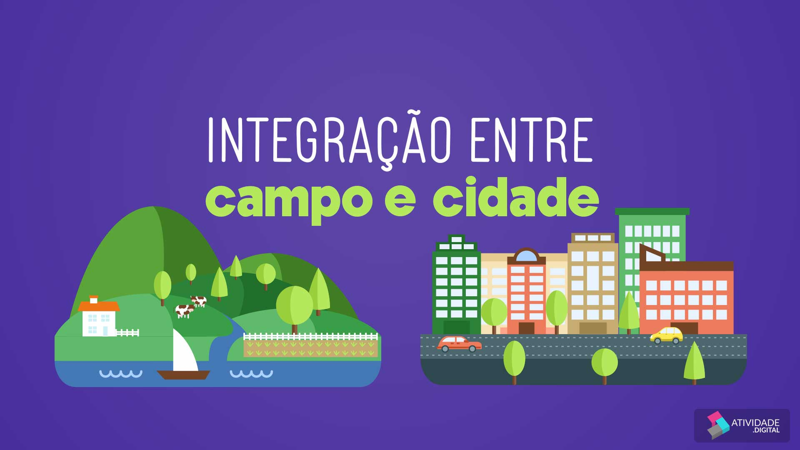
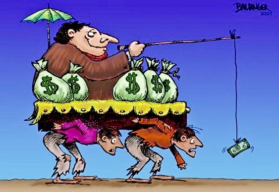

Sustentabilidade
Integração sustentável entre campo e cidade envolve práticas agrícolas responsáveis, conservação ambiental e planejamento urbano que respeita os recursos naturais.

A integração entre campo e cidade é crucial para um desenvolvimento equilibrado e sustentável. Ela permite uma troca benéfica de recursos, conhecimentos e serviços.
A colaboração entre áreas rurais e urbanas pode impulsionar a economia através do comércio de produtos agrícolas, turismo rural e inovação tecnológica.
Integração sustentável entre campo e cidade envolve práticas agrícolas responsáveis, conservação ambiental e planejamento urbano que respeita os recursos naturais.
Apesar dos benefícios, a integração enfrenta desafios como a desigualdade de acesso a recursos e a necessidade de políticas públicas eficazes.
Para superar esses desafios, é essencial a implementação de políticas públicas inclusivas e a participação ativa da comunidade.
Para mais informações, entre em contato conosco: